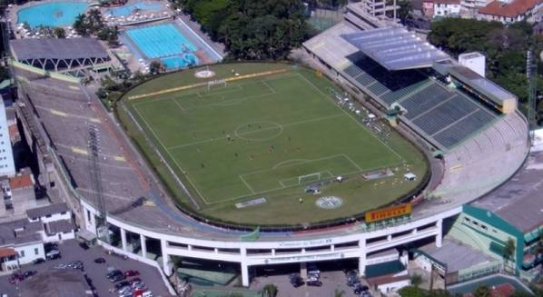
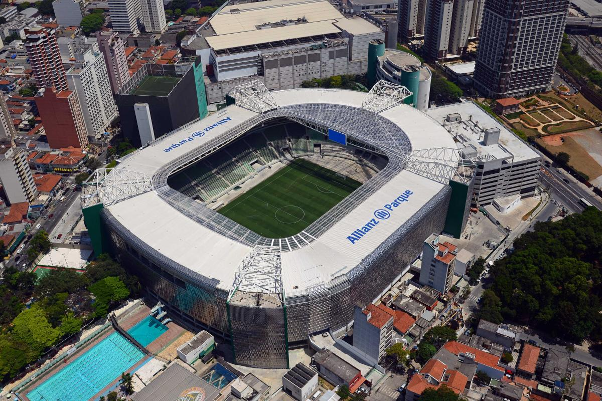

Parque Antarctica
Conhecida como Parque Antarctica, essa foi a primeira grande casa do Palmeiras. O local se tornou um ponto importante da história do clube, recebendo partidas marcantes e ajudando a construir a identidade do alviverde imponente.
Título de maior destaque: Copa Libertadores da América de 1999, marcada pelo primeiro titulo de Libertadores do Palmeiras, que depois viararia um time tradicional no campeonato.

Allianz Parque
Inaugurado em 2014, o Allianz Parque transformou a antiga área do Parque Antarctica em uma arena moderna, preparada para partidas, shows e grandes eventos. Desde então, passou a ser um dos principais palcos esportivos do Brasil.
Título de maior destaque: Copa do Brasil de 2015, a primeira grande taça conquistada pelo Palmeiras na nova arena, marcada pelo penalti decisivo batido pelo goleiro Fernando Prass.

Nubank Parque
O nome Nubank Parque representa uma nova fase da arena, aproximando o estádio de experiências digitais, inovação e entretenimento. A casa continua ligada à tradição do Palmeiras e à paixão de sua torcida.
Título de maior destaque: nenhum por enquanto, por se tratar de uma mudança ainda muito nova.

Informações Adicionais
O Nubank Parque possui uma capacidade para aproximadamente 43.000 espectadores e é conhecido por sua infraestrutura de alta qualidade, incluindo áreas VIP, restaurantes e lojas.